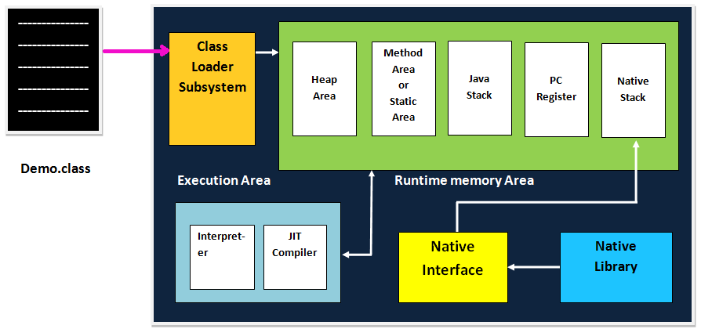
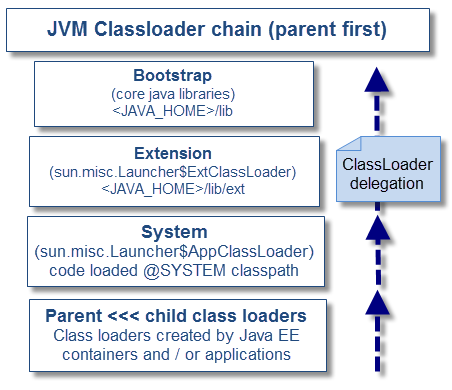

Java 9
A review of JSR (379)
Juan Antonio Breña MoralVíctor Herraiz Posada
Agenda
- 000. Introduction
- 001. Java Platform Module System
- 010. Concurrency Updates
- 011. The Java Shell
- 100. G1
- 101. Others
Introduction
How many days to release Java 9?
http://www.java9countdown.xyz/
Do you know the list of features included?
Introduction
JDK Enhancement Proposal (JEP): is a process for collecting proposals for enhancements to the Java Development Kit and OpenJDK.
https://en.m.wikipedia.org/wiki/JDK_Enhancement_Proposal
Java Specification Requests (JSR): are the actual descriptions of proposed and final specifications for the Java platform.
Introduction
Introduction
Features reviewed in the talk:
- JSR 376: Java Platform Module System
- JEP 266: More Concurrency Updates
- JEP 222: Jshell: The Java Shell
- JEP 248: G1 the Default Garbage Collector
- JEP 110: HTTP/2 Client
- JEP 226: UTF-8 Property Resource Bundles
But... Java 9 include more...
JSR 376: Java Platform Module System
- Why we need a Module system?
- API Reorganization
- How to create a Module?
- Build systems
- Open issues
- Conclusions
Why we need a Module system?
Software can be seen as a system of interacting parts and in Java it is common to package each of those parts in its own JAR. Conceptually a part consists of three properties: a name, a public API for the rest of the world to use, and dependencies on other parts. This graph-like model helps developers and tools dissect, analyse, and work with software systems.
Why we need a Module system?
JVM Classloader:
Open issues
Concurrency updates
JShell
G1

Others
- JEP 110: HTTP/2 Client
- JEP 226: UTF-8 Property Resource Bundles